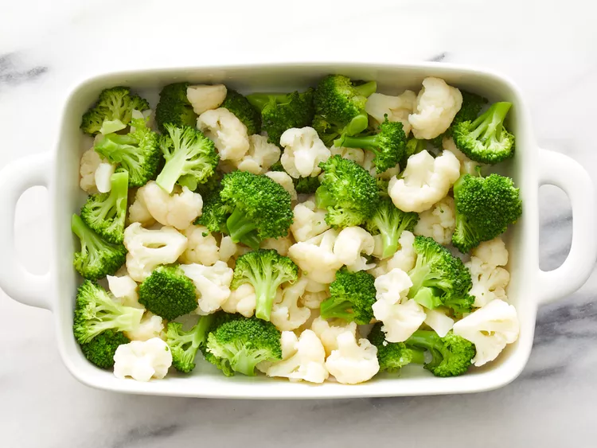
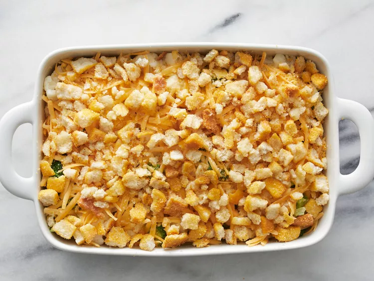

Preheat the oven to 350 degrees F (175 degrees C).
Place broccoli and cauliflower in separate saucepans, cover with water, and bring to a boil; cook until tender, 3 to 4 minutes. Drain and arrange in an 11x7-inch baking dish.
Beat eggs in a bowl until creamy; stir in 1/2 cup Cheddar cheese, mayonnaise, and onion and pour over vegetables. Pour melted butter on top and sprinkle with remaining 1/2 cup Cheddar cheese. Scatter crushed croutons evenly on top.
Bake in the preheated oven until browned and bubbling, about 40 minutes.